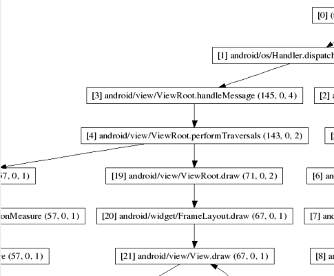

Traceview is a graphical viewer for execution logs saved by your application. Traceview can help you debug your application and profile its performance. The sections below describe how to use the program.
To use Traceview, you need to generate log files containing the trace information you want to analyze. To do that, you include the Debug class in your code and call its methods to start and stop logging of trace information to disk. When your application quits, you can then use Traceview to examine the log files for useful run-time information such as method calls and run times.
To create the trace files, include the Debug class and call one of the startMethodTracing() methods. In the call, you specify a base name for the trace files that the system generates. To stop tracing, call stopMethodTracing(). These methods start and stop method tracing across the entire virtual machine. For example, you could call startMethodTracing() in your activity's onCreate() method, and call stopMethodTracing() in that activity's onDestroy() method.
// start tracing to "/sdcard/calc.trace"
Debug.startMethodTracing("calc");
// ...
// stop tracing
Debug.stopMethodTracing();
When your application calls startMethodTracing(), the system creates a
file called <trace-base-name>.trace. This contains the
binary method trace data and a mapping table with thread and method names.
The system then begins buffering the generated trace data, until your application calls stopMethodTracing(), at which time it writes the buffered data to the output file. If the system reaches the maximum buffer size before stopMethodTracing() is called, the system stops tracing and sends a notification to the console.
Interpreted code will run more slowly when profiling is enabled. Don't try to generate absolute timings from the profiler results (i.e. "function X takes 2.5 seconds to run"). The times are only useful in relation to other profile output, so you can see if changes have made the code faster or slower.
When using the Android emulator, you must create an SD card image upon which
the trace files will be written. For example, from the /tools directory, you
can create an SD card image named "imgcd" and mount it when launching the emulator like so:
$ mksdcard 1024M ./imgcd $ emulator -sdcard ./imgcd
For more information, read about the mksdcard tool.
The format of the trace files is described later in this document.
After your application has run and the system has created your trace files <trace-base-name>.trace
on a device or emulator, you must copy those files to your development computer. You can use adb pull to copy
the files. Here's an example that shows how to copy an example file,
calc.trace, from the default location on the emulator to the /tmp directory on
the emulator host machine:
adb pull /sdcard/calc.trace /tmp
To run traceview and view the trace files, enter traceview <trace-base-name>.
For example, to run Traceview on the example files copied in the previous section,
you would use:
traceview /tmp/calc
Traceview loads the log files and displays their data in a window that has two panels:
The sections below provide addition information about the traceview output panes.
The image below shows a close up of the timeline panel. Each thread’s execution is shown in its own row, with time increasing to the right. Each method is shown in another color (colors are reused in a round-robin fashion starting with the methods that have the most inclusive time). The thin lines underneath the first row show the extent (entry to exit) of all the calls to the selected method. The method in this case is LoadListener.nativeFinished() and it was selected in the profile view.

The image below shows the profile pane. The profile pane shows a summary of all the time spent in a method. The table shows both the inclusive and exclusive times (as well as the percentage of the total time). Exclusive time is the time spent in the method. Inclusive time is the time spent in the method plus the time spent in any called functions. We refer to calling methods as "parents" and called methods as "children." When a method is selected (by clicking on it), it expands to show the parents and children. Parents are shown with a purple background and children with a yellow background. The last column in the table shows the number of calls to this method plus the number of recursive calls. The last column shows the number of calls out of the total number of calls made to that method. In this view, we can see that there were 14 calls to LoadListener.nativeFinished(); looking at the timeline panel shows that one of those calls took an unusually long time.

Tracing creates two distinct pieces of output: a data file, which holds the trace data, and a key file, which provides a mapping from binary identifiers to thread and method names. The files are concatenated when tracing completes, into a single .trace file.
Note: The previous version of Traceview did not concatenate
these files for you. If you have old key and data files that you'd still like to trace, you
can concatenate them yourself with cat mytrace.key mytrace.data > mytrace.trace.
The data file is binary, structured as follows (all values are stored in little-endian order):
* File format:
* header
* record 0
* record 1
* ...
*
* Header format:
* u4 magic 0x574f4c53 ('SLOW')
* u2 version
* u2 offset to data
* u8 start date/time in usec
*
* Record format:
* u1 thread ID
* u4 method ID | method action
* u4 time delta since start, in usec
The application is expected to parse all of the header fields, then seek to "offset to data" from the start of the file. From there it just reads 9-byte records until EOF is reached.
u8 start date/time in usec is the output from gettimeofday(). It's mainly there so that you can tell if the output was generated yesterday or three months ago.
method action sits in the two least-significant bits of the method word. The currently defined meanings are:
An unsigned 32-bit integer can hold about 70 minutes of time in microseconds.
The key file is a plain text file divided into three sections. Each section starts with a keyword that begins with '*'. If you see a '*' at the start of a line, you have found the start of a new section.
An example file might look like this:
*version 1 clock=global *threads 1 main 6 JDWP Handler 5 Async GC 4 Reference Handler 3 Finalizer 2 Signal Handler *methods 0x080f23f8 java/io/PrintStream write ([BII)V 0x080f25d4 java/io/PrintStream print (Ljava/lang/String;)V 0x080f27f4 java/io/PrintStream println (Ljava/lang/String;)V 0x080da620 java/lang/RuntimeException <init> ()V [...] 0x080f630c android/os/Debug startMethodTracing ()V 0x080f6350 android/os/Debug startMethodTracing (Ljava/lang/String;Ljava/lang/String;I)V *end
clock=global, indicates that we use a common
clock across all threads. A future version may use per-thread CPU time counters
that are independent for every thread.Neither the threads nor methods sections are sorted.
The Android SDK includes dmtracedump, a tool that gives you an alternate way of generating graphical call-stack diagrams from trace log files. The tool uses the Graphviz Dot utility to create the graphical output, so you need to install Graphviz before running dmtracedump.
The dmtracedump tool generates the call stack data as a tree diagram, with each call represented as a node. It shows call flow (from parent node to child nodes) using arrows. The diagram below shows an example of dmtracedump output.
For each node, dmtracedump shows <ref> callname (<inc-ms>,
<exc-ms>,<numcalls>), where
<ref> -- Call reference number, as used in trace logs<inc-ms> -- Inclusive elapsed time (milliseconds spent in method, including all child methods)<exc-ms> -- Exclusive elapsed time (milliseconds spent in method, not including any child methods)<numcalls> -- Number of callsThe usage for dmtracedump is:
dmtracedump [-ho] [-s sortable] [-d trace-base-name] [-g outfile] <trace-base-name>
The tool then loads trace log data from <trace-base-name>.data and <trace-base-name>.key. The table below lists the options for dmtracedump.
| Option | Description |
|---|---|
-d <trace-base-name> |
Diff with this trace name |
-g <outfile> |
Generate output to <outfile> |
-h |
Turn on HTML output |
-o |
Dump the trace file instead of profiling |
-d <trace-base-name> |
URL base to the location of the sortable javascript file |
-t <percent> |
Minimum threshold for including child nodes in the graph (child's inclusive time as a percentage of parent inclusive time). If this option is not used, the default threshold is 20%. |